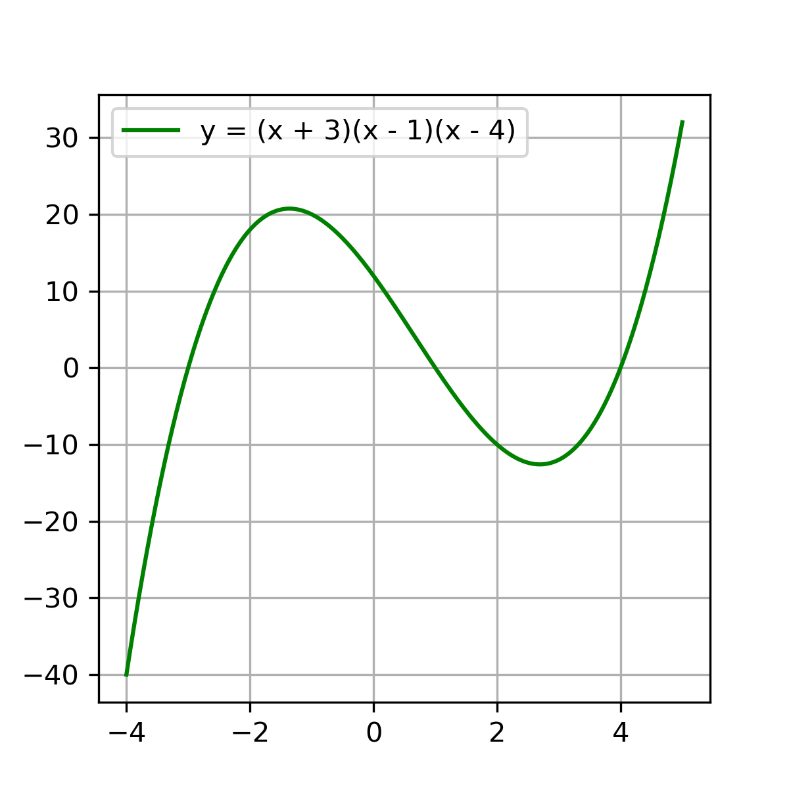
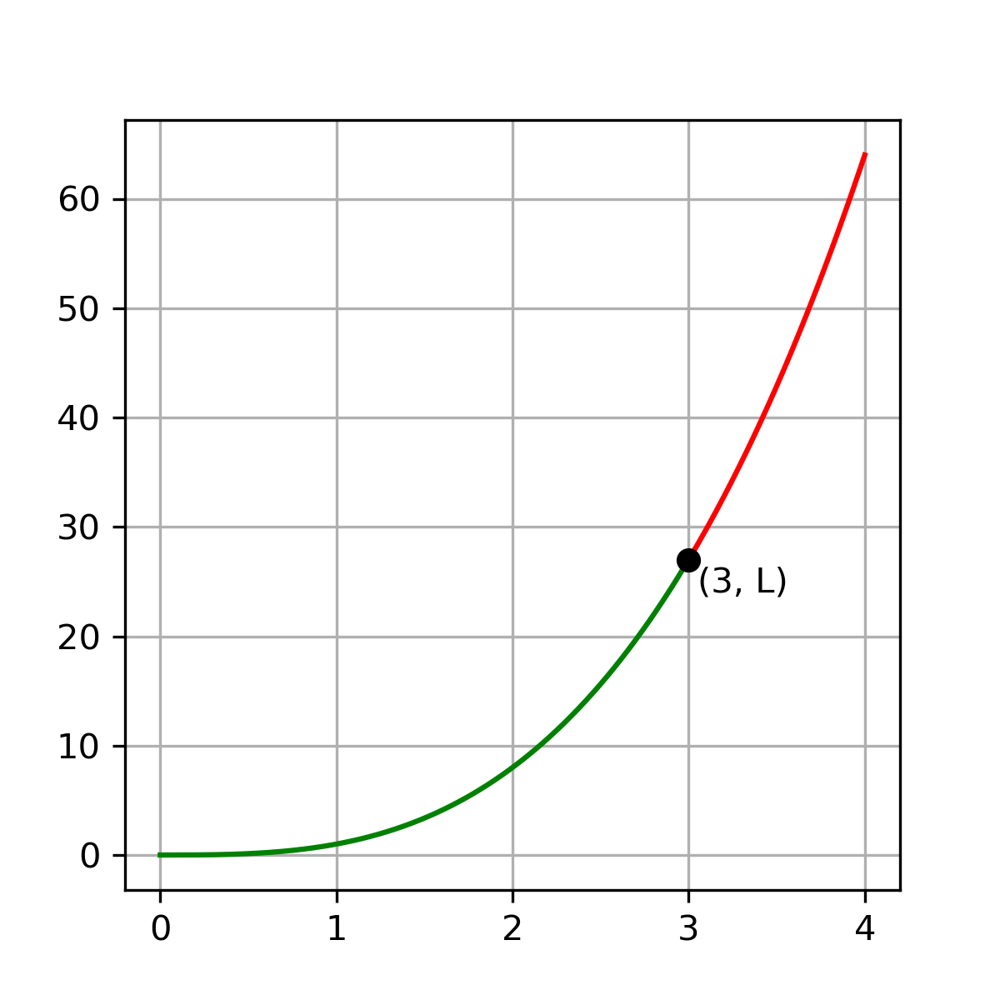

LIMITS AND CONTINUITY!!!
Remember end behavior from pre-calc? Well good for you cause I do!
For the graph to the left,
As \(x \to +\infty\), \(y \to +\infty\)
& as \(x \to -\infty\), \(y \to -\infty\)
This is actually a limit!
Let's see how it is written in limit notation!
I know your excited! So let's get right into it!
SO, What is a limit?
A limit is the value a function approaches as the variable of the function gets closer & closer to a particular value.
Limit Notation:
Note:
Notice how the word "approaches" is used.
This means that f(c) does not have to equal L.
It just has to approach L from both sides.
We write \(\lim_{x \to c} f(x) = L\) if \(f(x)\) approaches L as x approaches c.
One-Sided & Two-Sided Limits
\(\lim_{{x \to 3}} f(x)\) is the number that \(f(x)\) approaches as x approaches 3 from both sides.
In this graph, \(\lim_{{x \to 3}} f(x) = L\)
This is a two-sided limit (aka the general limit)
\(\lim_{{x \to 3^+}} f(x)\) is the number that \(f(x)\) approaches as x approaches 3 only with values greater than 3 (the red part of the graph). This is called a right-hand limit.
\(\lim_{{x \to 3^-}} f(x)\) is the number that \(f(x)\) approaches as x approaches 3 only with values less than 3 (the green part of the graph). This is called a left-hand limit.
Problems:
Note:
always use brackets when the function has multiple terms.
Afterall, we are taking the limit of the whole thing,
not just the first term.
- Find \(\lim_{{x \to 6}} x^3\)
- Find \(\lim_{{x \to 2}} x^2\)
- Find \(\lim_{{x \to 0}} (x^2 + 6x + 5)\)
Estimating Limit Values
Estimating Limit Values from Graphs
We are going to accomplish this by going exploring a series of examples. Here goes!
Estimating Limit Values from Tables
Algebraic Properties of Limits
Assuming that the limits exist,
- if \(b\) is a constant, then \(\lim_{{x \to c}}(bf(x)) = b(\lim_{{x \to c}}f(x))\)
- \(\lim_{{x \to c}}(f(x) + g(x)) = \lim_{{x \to c}}f(x) + \lim_{{x \to c}}g(x)\)
- \(\lim_{{x \to c}}(f(x)g(x)) = (\lim_{{x \to c}}f(x))(\lim_{{x \to c}}g(x))\)
- \(\lim_{{x \to c}} \frac{f(x)}{g(x)} = \frac{\lim_{{x \to c}} f(x)}{\lim_{{x \to c}} g(x)}\), provided \(\lim_{{x \to c}} g(x) \neq 0\)
- For any constant k, \(\lim_{{x \to c}} k = k\)
- \(\lim_{{x \to c}} x = c\)
- \(\lim_{{x \to c}} f(g(x)) = f(\lim_ {{x \to c}} g(x))\)
Algebraic Manipulation to Solve for Limits
Sometimes we can use algebra to simplify a limit & arrive at a finite answer.
Example 1: Solve for \(\lim_{{x \to 2}} \frac{x^2 + x - 6}{x^2 - 4}\)
Note:
You can also use L'Hopital's Rule (Unit 4) to solve these problems
By using direct substitution, we get,
\(\lim_{{x \to 2}} \frac{x^2 + x - 6}{x^2 - 4} = \frac{2^2 + 2 - 6}{2^2 - 4} = \frac{0}{0} = DNE\)
BUT if we simplify the expression first, we get,
\(\lim_{{x \to 2}} \frac{x^2 + x - 6}{x^2 - 4} \) \(= \lim_{{x \to 2}} \frac{(x + 3)\cancel{(x - 2)}}{(x + 2)\cancel{(x - 2)}} = \lim_{x \to 2} \frac{x + 3}{x + 2} = \frac{2 + 3}{2 + 2} = \frac{5}{4}\)
Unfortunately, factoring isn't always the option. Let us explore an even more intuitive method.
Example 2: Solve for \(\lim_{x \to \infty} \frac{3x + 7}{7x - 3}\)
By directly substituting, we would get,
\(\lim_{x \to \infty} \frac{3x + 7}{7x - 3} = \frac{\infty}{\infty}\), which is not correct.
Instead, we could divide numerator and denominator by the same value/variable.
\(\lim_{x \to \infty} \frac{3x + 7}{7x - 3} = \lim_{x \to \infty} \frac{\frac{3x}{x} + \frac{7}{x}}{\frac{7x}{x} - \frac{3}{x}} = \lim_{x \to \infty} \frac{3 + \frac{7}{x}}{7 - \frac{3}{x}} = \frac{3 + \frac{7}{\infty}}{7 - \frac{3}{\infty}} = \frac{3}{7}\)
& viola! the limit does exist!!
SO, When does the limit not exist?
Literally when there is no value L such that \(\lim_{x \to c} f(x) = L\), we say that \(\lim_{x \to c} f(x)\) does not exist.
i.e., when the right-hand limit \(\neq\) the left-hand limit
Pro-Tip:
For a general limit, always double-check that the left-hand limit
and right-hand limit agree. ALWAYS!!
Squeeze Theorem
Algebraic Manipulation doesn't always help us solve a limit.
Another tool that we could use to solve for limits is the Squeeze Theorem.
Take the three functions \(g(x), f(x)\) and \(h(x)\), for example.
If \(g(x) \leq f(x) \leq h(x)\) for a certain interval that contains c, \(\lim_{x \to c} g(x) = L\), and \(\lim_{x \to c} h(x) = L\)
then the Squeeze Theorem guarantees that \(\lim_{x \to c} f(x) = L\)
Example 3: INSERT SUITABLE EXAMPLE
AP CALC AB Must Knows:
\(\lim_{x \to 0} \frac{\sin x}{x} = 1\)
\(\lim_{x \to 0} \frac{\sin ax}{x} = a\)
\(\lim_{x \to 0} \frac{\sin ax}{\sin bx} = \frac{a}{b}\)
Continuity
Types of Discontinuity
A jump discontinuity occurs when the curve breaks and starts somewhere else. The left-side limit and rigth-side limit will exist, but they will not equal each other.
An essential/infinite discontinuity occurs when the curve has a vertical asymptote.
A removable discontinuity occurs when the curve (otherwise continuous) has a "hole" in it.
Defining Continuity
Continuity is defined by the following mantra:
Continuity at a point:
The function \(f(x)\) is continuous at a point x = c if and only if:
Rule 1: \(f(c)\) exists
Rule 2: \(\lim_{x \to c} f(x)\) exists
i.e., \(\lim_{x \to c^+} f(x) = \lim_{x \to c^-} f(x)\)
Rule 3: \(\lim_{x \to c} f(x) = f(c)\)
Continuity on an interval:
Function \(f\) is continuous on an interval of x-values IF and ONLY IF it is continuous at EACH and EVERY value of x on that interval.
For example, \(\sec x\) is not defined on \(x = \pm \frac{\pi}{2}\). So this means \(\sec x\) is continuous on the interval \((-\frac{\pi}{2}, \frac{\pi}{2})\) and not on the interval \([-\frac{\pi}{2}, \frac{\pi}{2}]\).
Removing Discontinuity
Limits and Asymptotes
Infinite Limits & Vertical Asymptotes
Infinite Limits & Horizontal Asymptotes
Intermediate Value Theorem
Rule 2: \(\lim_{x \to c} f(x)\) exists
For example, \(\sec x\) is not defined on \(x = \pm \frac{\pi}{2}\). So this means \(\sec x\) is continuous on the interval \((-\frac{\pi}{2}, \frac{\pi}{2})\) and not on the interval \([-\frac{\pi}{2}, \frac{\pi}{2}]\).